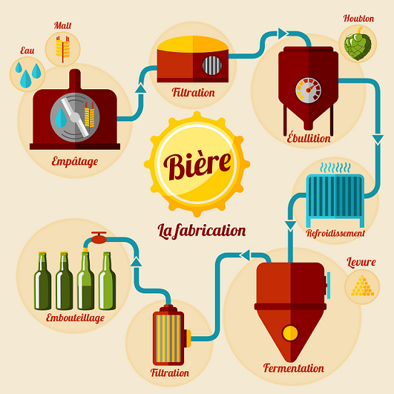

Le saviez-vous ?
C'est une boisson obtenue par fermentation alcoolique d'un moût de produits à l'issue du brassage.
C'est la plus ancienne boisson alcoolisée connue au monde et la plus consommée après l'eau et le thé.
La consommation de bière est à l'origine de nombreux évènements festifs : Fête de la bière, Mondial de la bière, Journée
internationale de la bière.
Des versions très faiblement alcoolisées (variant de 2° à 0°) sont
présentes sur le marché. Contrairement aux autres boissons « sans alcool
», elles sont élaborées par les mêmes procédés que la bière classique.
Comment se fabrique-t-elle ?
En Belgique: trois Fermentations. Haute, basse et spontanée.
La fermentation basse :
Elle nécessite l'adjonction dans le moût de levures dont l'activité est optimale à des températures basses (9-22 °C, idéalement 10-15 °C).
La fermentation haute :
Levures dont l'activité est optimale à des températures hautes (15-24 °C, idéalement 18-21 °C).
La fermentation spontanée :
Contrairement aux fermentations haute et basse, la fermentation spontanée ne nécessite pas d'ajout de levure dans le moût ; exposé à l'air libre, il est ensemencé par des levures sauvages.